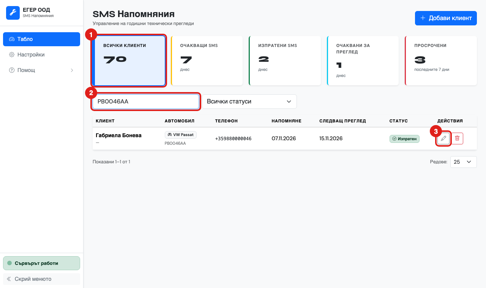
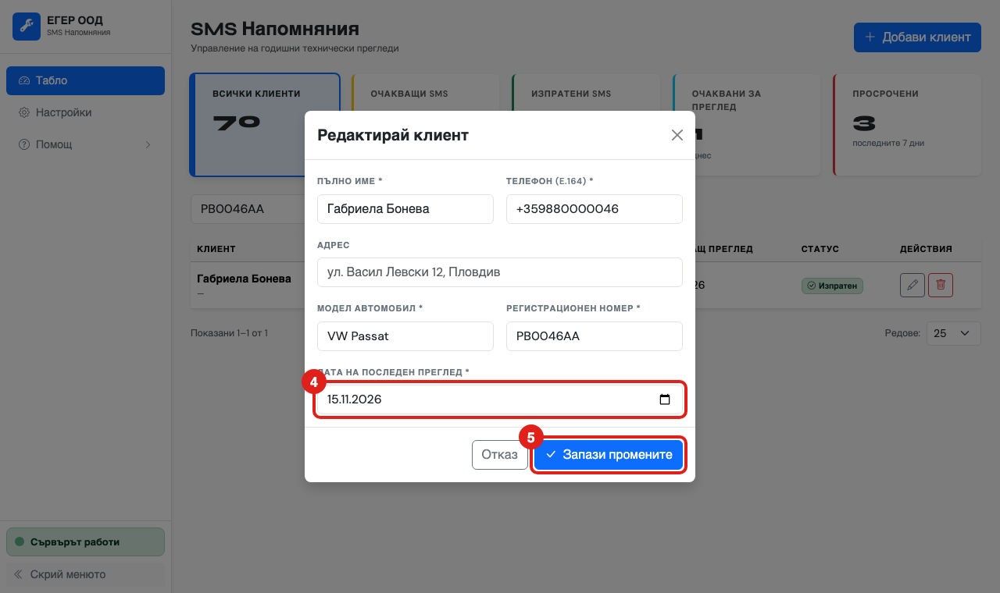

За печат или PDF: натиснете Ctrl + P
Клиентът мина прегледа
Направете това в деня на прегледа, за всеки клиент, който мина ГТП.
Пишете само новата дата. Програмата сама започва новата година за клиента.
Намерете клиента

- Щракнете картата Всички клиенти. 1
В картата „Очаквани за преглед“ няма бутон с молив.
- Напишете номера на колата в полето Търси…. 2
Колата не е в списъка? Добавете клиента (тема 2). Датата на последния преглед е днешната.
- На реда на клиента щракнете бутона с молив . 3
Напишете новата дата

- Отваря се прозорец „Редактирай клиент“. В „Дата на последен преглед“ напишете датата на днешния преглед. 4
Пишете датата на прегледа, не датата, на която изтича. Можете и да щракнете иконата календар и да изберете деня.
- Щракнете синия бутон Запази промените. 5
- Долу вдясно излиза зелено съобщение Клиентът е обновен.
Готово. Какво стана?
- „Следващ преглед“ = новата дата + 1 година.
- Статусът е „Очаква“. След една година клиентът пак получава едно SMS.
- Клиентът излиза от „Очаквани за преглед“ и от „Просрочени“.
- SMS-ът от тази година вече не се брои в „Изпратени SMS“.
Ако нещо не стане
- Клиентът не дойде за преглед.
- Не правете нищо. След датата на изтичане той е „Просрочен“ (тема 6). Дойде по-късно? Направете тази тема в деня, в който мина прегледа.
- Написахте грешна дата.
- Направете стъпки 1–6 още веднъж с вярната дата.
- Излиза червено съобщение „… не може да е в бъдещето“.
- Датата е след днес. Напишете датата на прегледа, който вече мина.
- Излиза червено съобщение „… е отворен в Excel“.
- Нищо не е променено. Затворете файла „клиенти.xlsx“ в Excel. Щракнете пак „Запази промените“.